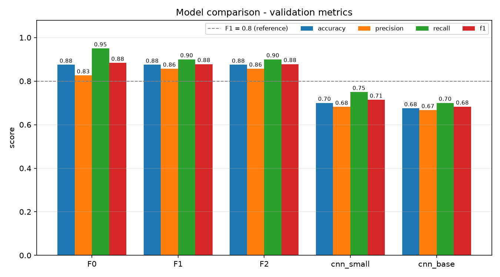
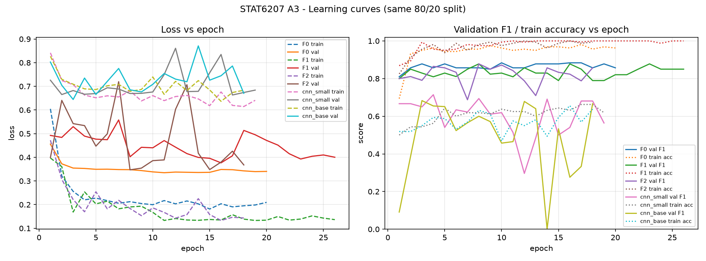
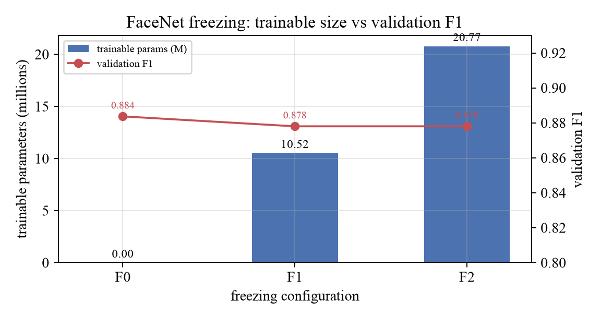
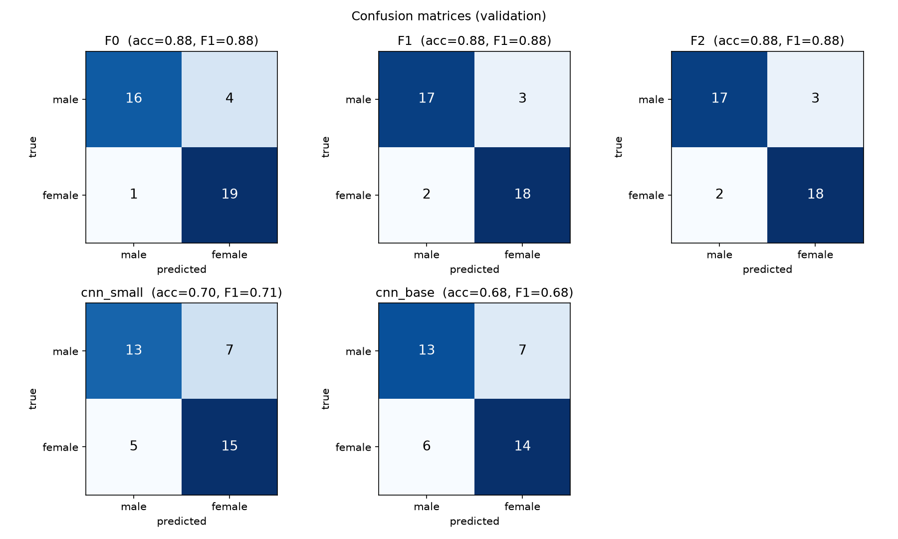
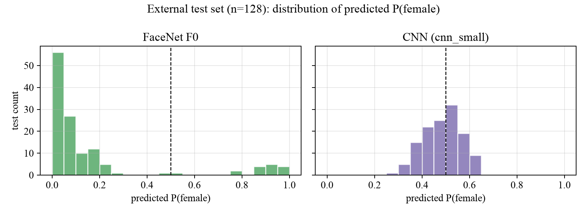
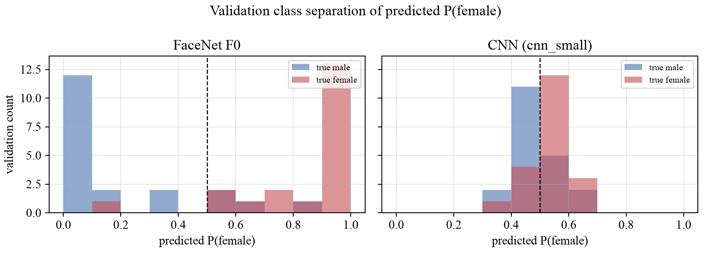

FaceNet Transfer Learning & CNN Comparison
1. Objective
Compare transfer learning with a pretrained FaceNet encoder against CNNs trained from scratch on a small, balanced dataset of labelled face images. Study how progressively unfreezing the backbone changes validation performance, trainable size and training time, then audit predictions on an external test set.
A fully frozen FaceNet backbone with a trained linear head (F0) achieved validation F1 0.884 and 87.5% accuracy, with only 1,026 trainable parameters.
2. Dataset and Quality Control
The dataset contains 200 aligned 160 × 160 face images, balanced across 100 male-labelled and 100 female-labelled examples. Images and existing annotations come from the FairFace mirror, configuration 1.25, validation split, filtered by its existing East Asian category.
- Seed-42 selection uses an adult-weighted age quota and excludes the 0–2 age bin.
- MTCNN detection and five-point alignment are followed by confidence, geometry and real-pixel quality gates.
- Exact SHA-256 duplicates and near-duplicates at dHash distance ≤ 6 are rejected.
- All 200 images are readable, correctly sized and independently detected as faces by YuNet.
- A fixed stratified split gives 160 training images and 40 validation images, with 20 examples per class in validation.
The binary categories are dataset annotations, not verified gender identities. FairFace has no identity labels, so duplicate-image checks cannot guarantee that individuals never appear across both partitions.
3. Model Families and Freezing Strategies
FaceNet uses Inception-ResNet-v1 pretrained on VGGFace2, a 512-dimensional embedding and a replacement two-class linear head. All variants share 23,483,650 total parameters.
| Variant | Trainable components | Trainable parameters |
|---|---|---|
| F0 | Classification head only | 1,026 |
| F1 | Head + final feature stage and embedding block | 10,524,162 |
| F2 | F1 + mixed_7a and repeat_2 | 20,770,818 |
Two CNNs are trained from random initialisation with convolution, activation, pooling and fully connected layers. cnn_small has 287,714 parameters; cnn_base has 1,173,730. No pretrained weights are used for these CNNs.
4. Experimental Setup
| Setting | FaceNet F0–F2 | CNNs from scratch |
|---|---|---|
| Optimiser | AdamW | AdamW |
| Learning rate | 0.001 head; 0.0002 unfrozen backbone | 0.001 |
| Weight decay | 0.0001 | 0.001 |
| Batch size | 16 | 16 |
| Max epochs / patience | 40 / 10 | 60 / 15 |
| Label smoothing | 0.05 | 0.05 |
| Normalisation | Mean = std = 0.5 | Training-set channel statistics |
| Selection | Highest validation F1; lower validation loss breaks ties | Same rule |
Both pipelines use random horizontal flipping, small affine transforms, colour jitter and cosine-annealed learning rates. Seeds and the split are shared across runs. Frozen modules remain in evaluation mode, preventing batch-normalisation updates. Training was performed on Apple MPS (M1, 8 GB).
Metrics below use the female-labelled class as the positive class. The selected checkpoint is restored before final validation predictions; external test images are not used for tuning.
5. Validation Results
| Model | Accuracy | Precision | Recall | F1 | Best epoch | Time (s) |
|---|---|---|---|---|---|---|
| FaceNet F0 | 0.875 | 0.826 | 0.950 | 0.884 | 10 | 34.7 |
| FaceNet F1 | 0.875 | 0.857 | 0.900 | 0.878 | 16 | 64.7 |
| FaceNet F2 | 0.875 | 0.857 | 0.900 | 0.878 | 8 | 71.4 |
cnn_small | 0.700 | 0.682 | 0.750 | 0.714 | 4 | 39.9 |
cnn_base | 0.675 | 0.667 | 0.700 | 0.683 | 3 | 40.7 |



The selection rule chooses FaceNet F0 overall and cnn_small within the from-scratch family. F0, F1 and F2 all achieve 0.875 accuracy; their small F1 differences are not evidence of a statistically reliable ranking.
6. Validation Error Analysis

F0 makes five errors out of 40: four male-labelled images are predicted female and one female-labelled image is predicted male. Its confusion matrix is [[16, 4], [1, 19]].
In the saved descriptive analysis, three errors involve the 3–19 age bins. Mean brightness is 91.0 for the five errors versus 109.0 for correctly classified images; blur and detection confidence do not clearly separate the groups. These are small-sample associations, not established causes.
The CNNs never fit the training set comfortably: their reported training accuracy stays below approximately 0.66, while validation fluctuates. Early best epochs therefore do not by themselves establish classic memorisation-driven overfitting.
7. External Test Predictions
The external set contains 128 RGB face crops, each 160 × 160. No ground-truth labels are available. Inference applies the same model-specific validation transforms, without a second face-detection crop.
| Model | Predicted M | Predicted F | Mean P(F) | Within P(F) 0.4–0.6 |
|---|---|---|---|---|
| FaceNet F0 | 112 | 16 | 0.178 | 2 / 128 |
| cnn_small | 68 | 60 | 0.487 | 98 / 128 |


No test accuracy or F1 is claimed. The models agree on 78/128 images. Prediction confidence and class counts are model outputs, not verified external-test labels.
8. Inference Consistency Audit
- The label mapping is consistently
0 → M, 1 → F. - Reloaded FaceNet F0 and cnn_small checkpoints each reproduce all 40/40 validation predictions.
- Resize, tensor conversion and model-specific normalisation match validation.
- Each model emits exactly one valid prediction per external filename: 128/128, without missing or duplicate entries.
- No checkpoint or threshold is tuned on the unlabelled external test set; predictions are preserved after the audit.
The audit found no implementation error in these checks. Weak CNN class separation is a plausible explanation for disagreement, but the absence of external labels prevents deciding which individual test predictions are correct.
9. Limitations
- Only 160 training and 40 validation images make model selection and error estimates noisy.
- No identity annotations are available to enforce an identity-disjoint split.
- Source labels may be noisy, and the dataset uses binary categories.
- The source category is only a proxy for the intended evaluation domain; image style and capture conditions can shift.
- The external test set has no labels, so generalisation accuracy cannot be measured there.
- Probability calibration was not evaluated; confidence is not a correctness guarantee.
10. Conclusion
In this small-data experiment, a frozen pretrained FaceNet encoder and linear head provide the strongest validation result at the lowest trainable parameter count. Progressively unfreezing the backbone increases training cost without improving validation F1; both randomly initialised CNNs perform worse.
The external inference audit checks pipeline consistency, while the disagreement between models and missing test labels remain explicit limitations.
Sources: FairFace, facenet-pytorch, and the saved validation metrics and inference audit.